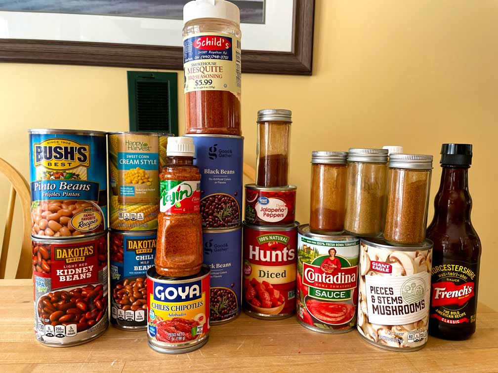
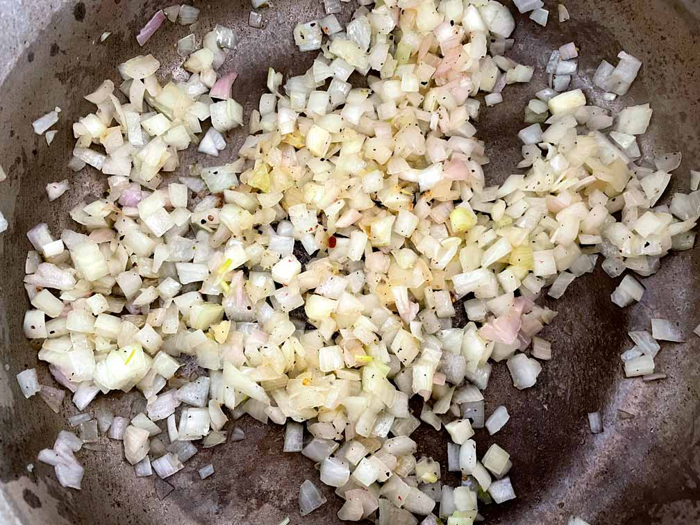
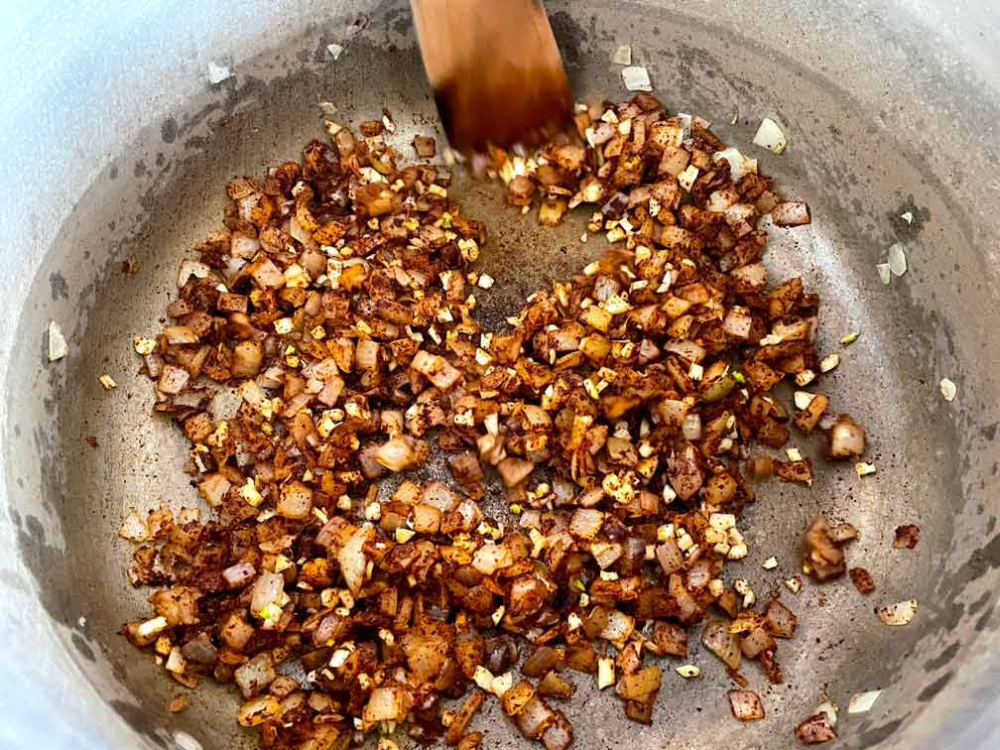
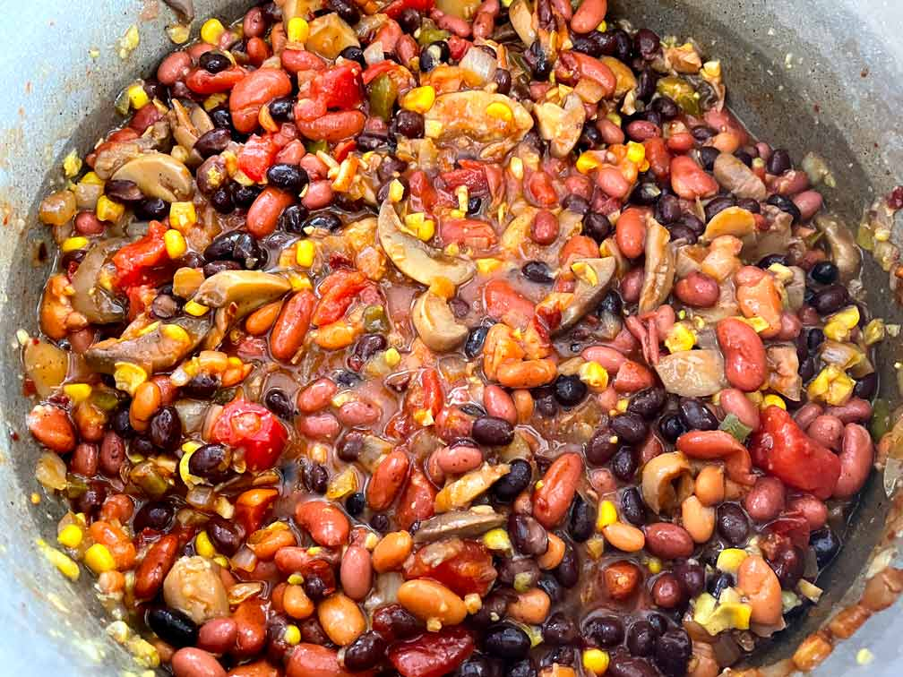
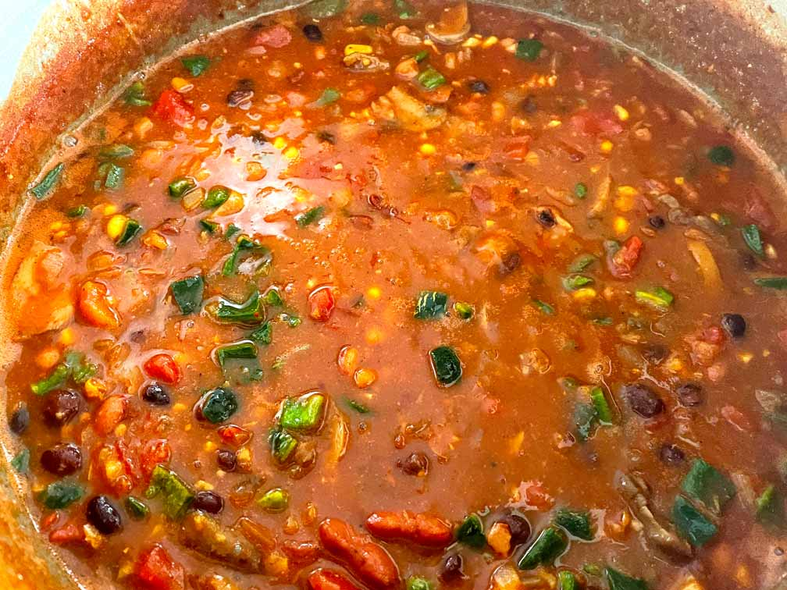
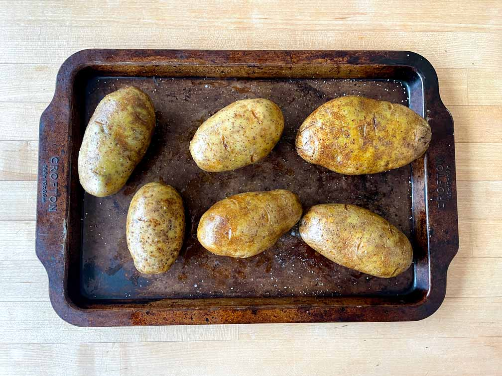
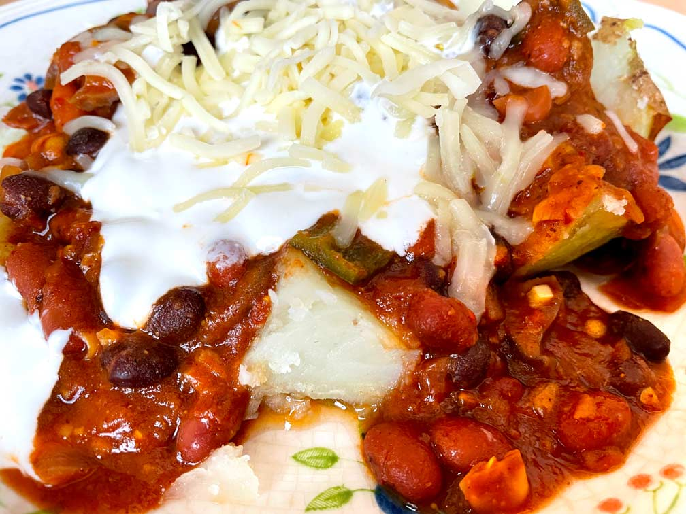

<!DOCTYPE html>
<html lang="en-US">
  <head>
    <title>What-the-hell-is-in-my-pantry Chili</title>
    <!-- to avoid weired symbols -->
    <meta charset="utf-8"/>
    <!-- responsive -->
    <meta name="viewport" content="width=device-width, initial-scale=1.0"/>
    <meta http-equiv="X-UA-Compatible" content="IE=edge,chrome=1"/>
    <meta name="HandheldFriendly" content="true"/>

    <!-- manifest -->
    <link rel="manifest" href="../manifest.json" crossorigin="use-credentials">

    <!-- google metatags -->
    <meta name="description" content="What-the-hell-is-in-my-pantry Chili" />

    <!-- facebook metatags -->
    <meta property="og:url" content="hungry-vegetarian.com/chili" />
    <meta property="og:type" content="article" />
    <meta property="og:title" content="What-the-hell-is-in-my-pantry Chili" />
    <meta property="og:description" content="It is an extremely delicious Chili. To cook this meal, we used almost all the cans from the pantry that sat there for years. The amount we cooked out of the ingredients I listed is enough for a party." />
    <meta property="og:image" content="images/chili/img/ready.jpg" />
    <meta property="fb:app_id" content="511634172766587" />

    <!-- LinkedIn metatags -->
    <meta property='og:title' content="What-the-hell-is-in-my-pantry Chili"/>
    <meta property='og:image' content="images/chili/img/ready.jpg"/>
    <meta property='og:description' content="It is an extremely delicious Chili. To cook this meal, we used almost all the cans from the pantry that sat there for years. The amount we cooked out of the ingredients I listed is enough for a party."/>
    <meta property='og:url' content="hungry-vegetarian.com/chili" />

    <!-- pintrest metatags -->
    <meta property="og:site_name" content="hungry-vegetarian.com/chili" />

    <!--  favicon -->
    <link rel="apple-touch-icon" sizes="180x180" href="../images/favicon_package_v0.16/apple-touch-icon.png">
    <link rel="icon" type="image/png" sizes="32x32" href="../images/favicon_package_v0.16/favicon-32x32.png">
    <link rel="icon" type="image/png" sizes="16x16" href="../images/favicon_package_v0.16/favicon-16x16.png">
    <link rel="manifest" href="../images/site.webmanifest">
    <link rel="mask-icon" href="../images/safari-pinned-tab.svg" color="#5bbad5">
    <meta name="msapplication-TileColor" content="#da532c">
    <meta name="theme-color" content="#ffffff">

    <!-- css -->
    <link rel="stylesheet" href="styles/style.css">
    <link rel="stylesheet" href="styles/recipe.css">
    <link rel="stylesheet" href="images/chili/parallax.css">
    <link rel="stylesheet" href="styles/share.css">

    <!-- font-awesome -->
    <link href="https://use.fontawesome.com/releases/v5.6.1/css/all.css" rel="stylesheet">
  
    <!-- bootstrap css-->
    <link href="https://cdn.jsdelivr.net/npm/bootstrap@5.1.3/dist/css/bootstrap.min.css" rel="stylesheet" integrity="sha384-1BmE4kWBq78iYhFldvKuhfTAU6auU8tT94WrHftjDbrCEXSU1oBoqyl2QvZ6jIW3" crossorigin="anonymous">
    <!-- bootstrap js-->
    <script src="https://cdn.jsdelivr.net/npm/bootstrap@5.1.3/dist/js/bootstrap.bundle.min.js" integrity="sha384-ka7Sk0Gln4gmtz2MlQnikT1wXgYsOg+OMhuP+IlRH9sENBO0LRn5q+8nbTov4+1p" crossorigin="anonymous"></script>

    <!-- google fonts -->
    <link rel="preconnect" href="https://fonts.googleapis.com"><link rel="preconnect" href="https://fonts.gstatic.com" crossorigin><link href="https://fonts.googleapis.com/css2?family=Annie+Use+Your+Telescope&display=swap" rel="stylesheet">
    <link rel="preconnect" href="https://fonts.googleapis.com"><link rel="preconnect" href="https://fonts.gstatic.com" crossorigin><link href="https://fonts.googleapis.com/css2?family=Cabin+Sketch:wght@400;700&display=swap" rel="stylesheet">
    <link rel="preconnect" href="https://fonts.googleapis.com"><link rel="preconnect" href="https://fonts.gstatic.com" crossorigin><link href="https://fonts.googleapis.com/css2?family=Raleway:wght@100;200;300;400;600&display=swap" rel="stylesheet">
    <script src="https://cdn.jsdelivr.net/npm/vue@2/dist/vue.js"></script>
  
    <!-- Global site tag (gtag.js) - Google Analytics -->
    <script async src="https://www.googletagmanager.com/gtag/js?id=UA-188818029-3"></script>
    <script>
      window.dataLayer = window.dataLayer || [];
      function gtag(){dataLayer.push(arguments);}
      gtag('js', new Date());

      gtag('config', 'UA-188818029-3');
    </script>

    <!-- For reusable components-->
     <script src="https://cdnjs.cloudflare.com/ajax/libs/jquery/2.2.2/jquery.min.js"></script>
    <script> 
      $(function(){
        $(".header").load("../header.html"); 
        $(".footer").load("../footer.html"); 
      });
    </script> 
  </head>
  <body>
     <div class="header"></div>
        <div class="parallax">
          <a href="https://www.pinterest.com/pin/create/button/" data-pin-do="buttonBookmark"> </a>
          <div class="banner-text">
            <h2 class="recipe-name">What-the-hell-is-in-my-pantry Chili</h2>
            <p class="tagline">It is an extremely delicious Chili. To cook this meal, we used almost all the cans from the pantry that sat there for years. The amount we cooked out of the ingredients I listed is enough for a party. 
            </p>
          </div>
        </div>
        <div class="btn_wrap"> 
          <span>Share recipe</span>
            <div class="sliding-share">
                <a href="http://www.facebook.com/sharer.php?u=hungry-vegetarian.com/chili" class="share" target="_blank"><i class="fab fa-facebook-f"></i></a>
                <a href="https://twitter.com/share?url=hungry-vegetarian.com/chili&amp;text=It is an extremely delicious Chili. To cook this meal, we used almost all the cans from the pantry that sat there for years. The amount we cooked out of the ingredients I listed is enough for a party." class="share" target="_blank"><i class="fab fa-twitter"></i></a>
                <a href="https://www.linkedin.com/sharing/share-offsite/?url=https://hungry-vegetarian.com/chili.html" class="share" target="_blank"><i class="fab fa-linkedin"></i></a>
            </div>
        </div>
        <div class="recipe-itself">
          <p class="ingredients">
            <b>Ingredients:</b><br><br>
            1 Onion<br>
            1 Head of Garlic<br>
            1 Poblano Pepper<br>
            1 can of Pinto Beans - Frijotes Pintos<br>
            1 can of Kidney Beans<br>
            1 can of Sweet Corn - Cream Style<br>
            1 can of Chili Mild Beans<br>
            1 can of Chiles Chipotles<br>
            2 can of Black Beans<br>
            1/3 of a can Jalapeno Peppers<br>
            1 can of Diced Tomatoes<br>
            1 can of Pieces & Stems Mushrooms<br>
            1 can of Tomato Sauce<br>
            A1 steak sauce<br> 
            2 cups of Vegetable Broth<br> 
            1 table spoon-ish of Worcestershire sauce<br>
            2 tablespoons lime juice/ 1 lime juiced<br> 
            Vegetable oil<br>
            <br>
            <b>Spices:</b> Salt, Cumin, Chili pounder, Smoked Paprika, Cayenne Pepper, 1/2 teaspoon of Sugar, Barbecue Seasoning, Tajin  <br>
            <b>Add to your bowl:</b> Parmesan Cheese, Sour Cream.<br>
          </p>
          <div class="container">
            <div class="step">
              <div class="recipe-img">
                  
              </div>
              <div class="box-howto">
                <p class="howto">
                   We cleared the entire pantry and used all the canned beans we could find. You don't have to use exactly the same cans of beans we did. 
                </p>
              </div>
            </div>
            <div class="step">
              <div class="recipe-img">
                <div id="carouselExampleControls" class="carousel slide" data-bs-ride="carousel" data-bs-interval="false">
                  <div class="carousel-inner">
                    <div class="carousel-item active">
                      
                    </div>
                    <div class="carousel-item">
                      
                    </div>
                    <button class="carousel-control-prev" type="button" data-bs-target="#carouselExampleControls" data-bs-slide="prev">
                      <span class="carousel-control-prev-icon" aria-hidden="true"></span>
                      <span class="visually-hidden">Previous</span>
                    </button>
                    <button class="carousel-control-next" type="button" data-bs-target="#carouselExampleControls" data-bs-slide="next">
                      <span class="carousel-control-next-icon" aria-hidden="true"></span>
                      <span class="visually-hidden">Next</span>
                    </button>
                  </div>
                </div>
              </div>
              <div class="box-howto">
                <p class="howto">
                   Chop up onions and fry them in vegetable oil. Chop up the garlic. Add it into the fried onions with cumin, chili pounder, smoked paprika, cayenne pepper, 1/2 teaspoon of sugar. 
                </p>
              </div>
            </div>
            <div class="step">
              <div class="recipe-img">
                
              </div>
              <div class="box-howto">
                <p class="howto">
                  Open up all the cans, rinse your beans first and dump them into the pot. Chop 2 adobe chipotle canned peppers. Add them into the pot. Mix it and let it cook for a minute.
                </p>
              </div>
            </div>
            <div class="step">
              <div class="recipe-img">
                
              </div>
              <div class="box-howto">
                <p class="howto">
                  Into the pot add tomato sauce, 2 cups of vegetable broth, one table spoon-ish of Worcestershire sauce, barbecue seasoning, tajin, one steak sauce, 2 tablespoons lime juice. Dice poblano peppers and add them into the pot.
                </p>
              </div>
            </div>
            <div class="step">
              <div class="recipe-img">
                
              </div>
              <div class="box-howto">
                <p class="howto">
                  We baked potatoes as a side dish. However, it can be anything else you'd like. Poke potatoes with a fork all around. Rub them in olive oil and salt. Bake in the oven at 450 degrees (preheat) for 45-60 minutes. The skin is going to be crispy. 
                </p>
              </div>
            </div>
            <div class="step">
              <div class="recipe-img">
                
              </div>
              <div class="box-howto">
                <p class="howto">
                  Cut open potatoes and pour chili on top of it. Put some parmesan cheese and sour cream. It turns out just a little bit spicy. If you want it to be spicier add more jalapeno peppers. Delicious! 
                </p>
              </div>
            </div>
        </div>
      <div class="parallax-end">
        <h2 class="recipe-name">Enjoy</h2>
      </div>
     <div class="footer"></div>
    <script type="text/javascript" async defer src="//assets.pinterest.com/js/pinit.js"></script> 
  </body>
</html>        